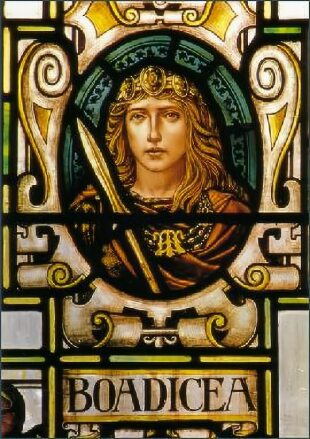
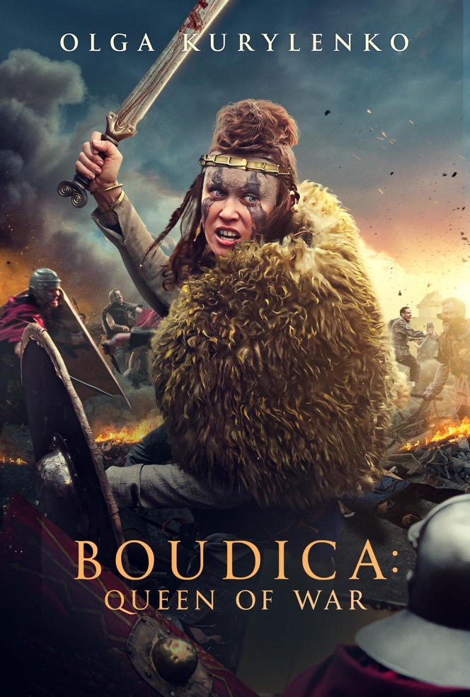
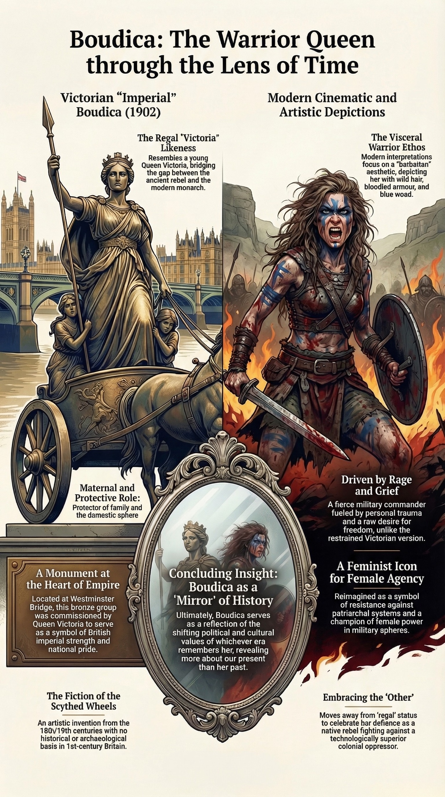

Lesson 1
How and why have images of Boudicca changed across two thousand years — and what do those changes tell us about the people who created them?
~25 min
AH11-1: Describes the nature of continuity and change in the ancient world
AH11-7: Discusses and evaluates differing interpretations and representations of the past
AH11-6: Analyses and interprets different types of sources for evidence
To understand how and why representations of Boudicca have changed across time, and to consider what these representations reveal about the people who created them.
0 of 4 criteria met
By the end of this lesson, I can:
Teacher — Sharing LISC
Display the learning intention and success criteria on the board. Read them aloud and ask students to identify the key verbs (explain, identify, analyse). This helps students understand what level of thinking is expected. Check understanding: “Can someone put the learning intention into their own words?” (cold call).
Before we begin, take a moment to think about what you already know — or think you know — about Boudicca. There are no wrong answers here.
How much do you already know about Boudicca?
Teacher — Activating Prior Knowledge
Use cold call to ask 3–4 students what they wrote. Accept all responses without correction — the purpose is retrieval, not assessment. Note any misconceptions to return to later.
Prior knowledge gauge: “Thumbs up if you’ve heard of Boudicca before today, thumbs sideways if the name sounds familiar, thumbs down if it’s completely new.” This is not a CFU — it gauges the class baseline to help you pitch the lesson appropriately.
Teacher — Modelling (‘I Do’)
Model with an everyday example before reading the text: “Think about how two different news outlets might report the same football match. One might focus on the winning team’s brilliance, the other on the losing team’s mistakes. Same event — different story. That’s what historiography studies.”
Read the first paragraph aloud, then pause to check understanding before continuing.
History is not simply a record of what happened. It is always an interpretation — a story constructed by people with their own perspectives, cultural backgrounds, political purposes, and limited access to evidence. The study of how historical accounts are constructed, who writes them, why they write them, and how interpretations change over time is called historiography.
When we study a figure like Boudicca, we are not only studying a person from the first century AD. We are also studying every scholar, artist, poet, filmmaker, and government official who has re-created her image in the centuries since. Each of these retellings tells us as much about the teller as it does about the original subject.
For ancient history students in NSW, historiography is a core skill (AH11-7). You will need to ask: Who created this source? When? For what audience? What was their purpose? What do they include or leave out — and why?
Teacher — CFU
Use cold call. If they answer incorrectly, ask: “Who can help?” Aim for 80%+ success before moving on.
Historiography is best defined as:
Teacher — Guided Reading (‘We Do’)
Have students read this section silently. Then use think-pair-share: “Turn to your partner and discuss: What is the main problem historians face when studying Boudicca?” (60 seconds). Cold call 2–3 pairs.
Boudicca presents a unique historiographical problem: the people who recorded her story were her enemies. The only extended written accounts come from two Roman historians — Tacitus, writing around AD 98, and Cassius Dio, writing around AD 220. Neither was present during the revolt. Neither was Celtic. Both were writing for Roman audiences.
The Celtic peoples of Britain left no written records of their own. They preserved knowledge through oral tradition — stories, songs, and religious teaching passed down by bards and Druids. This oral tradition left no traces that survive to the present day. As a result, we can only approach Boudicca’s story through the lens of those who opposed her.
Key Concept
The absence of Celtic written sources is not simply a gap in evidence — it is itself a product of Roman conquest. The suppression of Druidic practice, the destruction of native culture, and the imposition of Latin literacy all contributed to the silence of Celtic voices in the historical record.
The main reason Boudicca is particularly difficult to study is that:
Teacher — Modelling: Source Analysis Think-Aloud
Display an image of the Thornycroft statue and model source analysis using a think-aloud:
This makes expert thinking visible to students.
The most famous visual representation of Boudicca is the bronze statue at the northern end of Westminster Bridge, facing the Houses of Parliament. Sculpted by Thomas Thornycroft and erected in 1902, “Boadicea and Her Daughters” shows a triumphant warrior queen standing upright in a scythed chariot drawn by two rearing horses, her daughters crouching beside her.
This image is powerful and instantly recognisable — but it is a Victorian image, not an ancient one. Thornycroft began work in the 1850s, inspired by parallels drawn between Boudicca and Queen Victoria (whose name also means “victory” in Latin). Prince Albert was personally involved, envisioning the statue as a monument to British imperial strength.
The chariot is historically inaccurate. It is modelled on Roman chariots, not the lighter Celtic war-chariots used by the Iceni. The scythed wheels reflect Victorian imagination more than archaeological evidence. The statue says more about Britain’s imperial confidence than about the historical Boudicca.
The plinth inscription quotes William Cowper’s 1782 poem: “REGIONS CAESAR NEVER KNEW / THY POSTERITY SHALL SWAY” — celebrating British imperial expansion in Boudicca’s name, despite the profound irony of a freedom fighter being used to justify empire.
Teacher — CFU
Gesture voting: “Hold up A, B, C, or D with your fingers. On three — one, two, three — show me.” If fewer than 80% show C, re-teach using the chariot example.
The Thornycroft statue tells us more about:
Each era has reshaped Boudicca to reflect its own values and concerns. Understanding this pattern of re-interpretation is central to historical thinking.
Teacher — Scaffolding
Walk through the timeline together. For each entry, ask: “What does this representation tell us about that time period?”
Gesture voting (retrieval check): “True or false: Boudicca has been continuously remembered from the Roman period to today. Thumbs up for true, thumbs down for false.” (Answer: false — she disappeared during the medieval period.) If fewer than 80% show thumbs down, re-read the medieval silence entry together before moving on.
Then think-pair-share: “Turn to your partner — which representation surprised you most and why?” (60 seconds, then cold call 2–3 pairs.)
c. AD 117
Tacitus portrays Boudicca as a wronged queen whose revolt was provoked by Roman injustice. Sympathetic but she remains a “barbarian” — a foil for Roman moral criticism.
c. AD 220
Cassius Dio depicts her as a terrifying, almost supernatural figure — tall, fierce, with red hair and a harsh voice. More dramatic and sensational.
500–1400
Medieval silence. Boudicca largely disappears from historical memory, overshadowed by Christian and Arthurian narratives.
c. 1534
Polydore Vergil rediscovers her story in Roman sources and reintroduces it to English readers.
1600s–1700s
Appears in plays and poems as a symbol of British resistance, including Fletcher’s Bonduca (1611) and Cowper’s Boadicea (1782).
1850s–1902
Victorian Britain reimagines her as a national heroine and proto-imperialist. Thornycroft’s statue becomes the defining image.
1970s–1990s
Feminist historians reclaim her as a symbol of female power and resistance against patriarchal oppression.
2000s–today
Post-colonial scholars interrogate how her image has been used for nationalist and imperialist purposes.
Watch how Boudicca has been represented across two thousand years of art, literature, and film.
Teacher — Video
Play the video as a class. Pause at key moments and ask: “What values does this representation reflect?” This reinforces the lesson’s central question — that representations tell us about the creator, not just the subject.
After viewing: Cold call 2–3 students: “Which representation from the video surprised you most, and why?”
Compare how different eras have imagined the same historical figure.



During which period did Boudicca largely disappear from historical memory?
Match each time period to how Boudicca was represented:
When working with any source — primary or secondary — apply the OVPRL framework:
| Letter | Stands For | Ask Yourself |
|---|---|---|
| O | Origin | Who created this source? When? Where? |
| V | Value | What useful information does this source provide? |
| P | Purpose | Why was this source created? What was the author trying to achieve? |
| R | Reliability | How trustworthy is this source? Any biases or limitations? |
| L | Limitations | What does this source not tell us? What is missing? |
Teacher — Gradual Release: I Do, We Do, You Do
Check understanding after each step. Use cold call to share responses.
Complete each field. Use the hint button if you need guidance.
Choose the level that challenges you, or work through all three.
Teacher — Independent Practice (‘You Do’)
Students should attempt these only after a high success rate on the CFU questions. Direct all students to Foundation first.
Exit ticket: Students answer Foundation Q3 on a sticky note before leaving.
Recall and describe
Analyse and explain
Evaluate and debate
Click each card to reveal its definition.
Return to the success criteria from the start of this lesson. Can you now tick off each one? If any remain unticked, scroll back and review the relevant section.
Teacher — Review of Learning
Self-assessment for each criterion: “Thumbs up if confident, sideways if partly there, down if you need more help.”
Exit ticket: “On a sticky note, write one thing you learned today that surprised you about Boudicca.” Collect as students leave.
How confident do you feel about this lesson’s content?